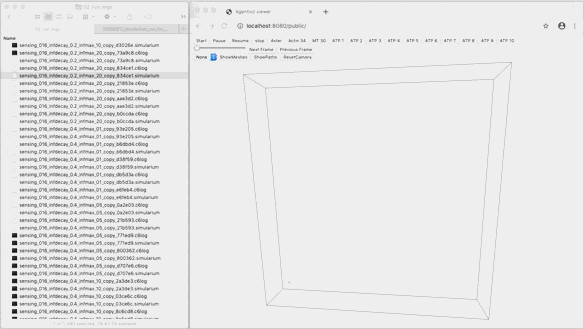

Welcome to simulariumio’s documentation!#
Simularium repositories#
This repository is part of the Simularium project (simularium.allencell.org), which includes repositories:
simulariumIO - Python package that converts simulation outputs to the format consumed by the Simularium viewer website
simularium-engine - C++ backend application that interfaces with biological simulation engines and serves simulation data to the front end website
simularium-viewer - NPM package to view Simularium trajectories in 3D
simularium-website - Front end website for the Simularium project, includes the Simularium viewer
SimulariumIO#
Convert simulation outputs so they can be visualized in the Simularium Viewer.#
1. Convert your data#
Save your data as a .simularium file (click to see full file format (see Jupyter notebook examples):
import numpy as np
from simulariumio import TrajectoryConverter, TrajectoryData, MetaData, AgentData, ScatterPlotData
converter = TrajectoryConverter(
TrajectoryData(
meta_data=MetaData(
box_size=BOX_SIZE_NUMPY_ARRAY,
trajectory_title="Model A with parameter set 1",
),
agent_data=AgentData(
DATA_FOR_OBJECTS_MOVING_OVER_TIME
),
)
)
converter.add_plot(
ScatterPlotData(
title="Something measured",
xaxis_title="Time (s) or something else",
yaxis_title="Some measurement (units)",
xtrace=X_VALUES_NUMPY_ARRAY,
ytraces={
"Agent 1" : Y_VALUES_NUMPY_ARRAY,
},
)
)
converter.save("output_file_name")
2. Load in the Simularium Viewer#
Load your file in the Simularium Viewer at https://simularium.allencell.org/viewer to interactively rotate and play back your data:
{kind=link}